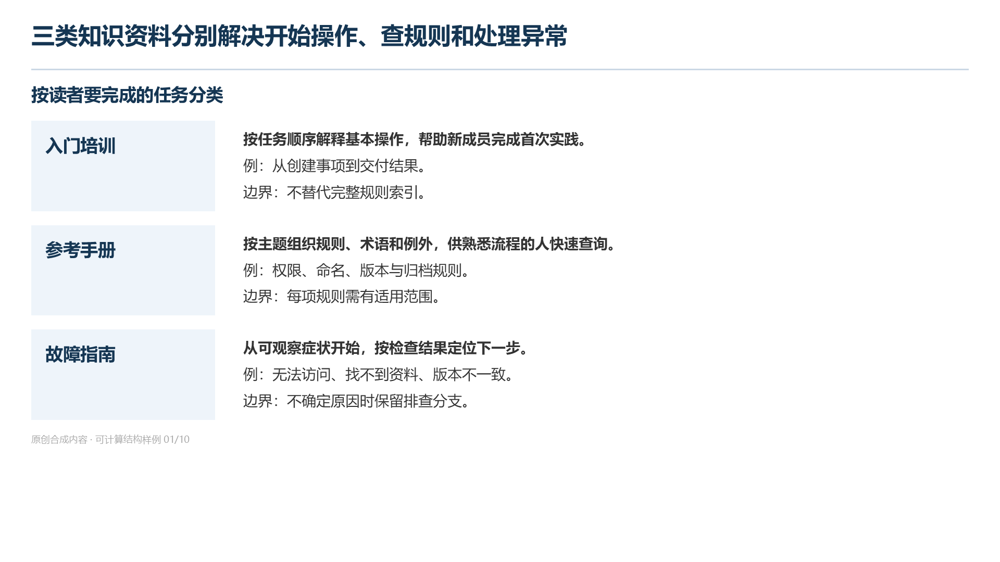
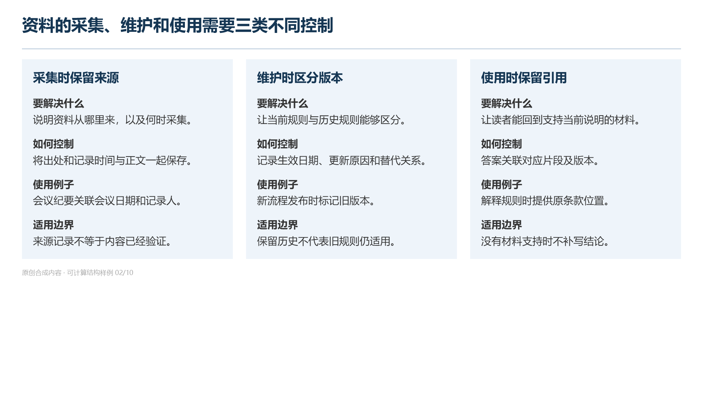
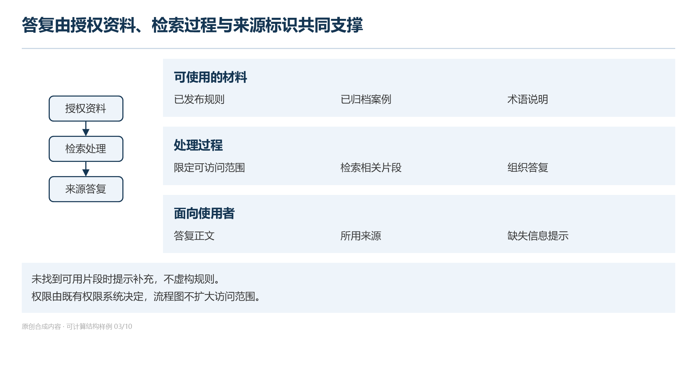
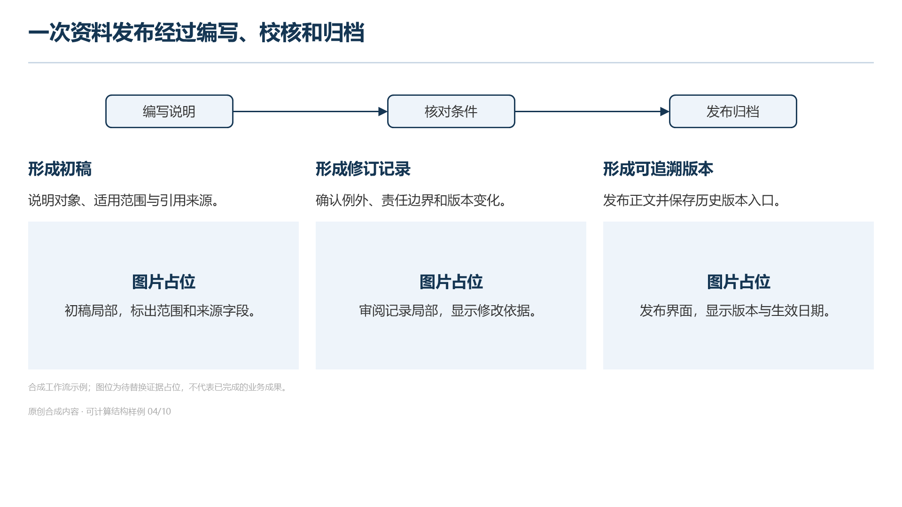
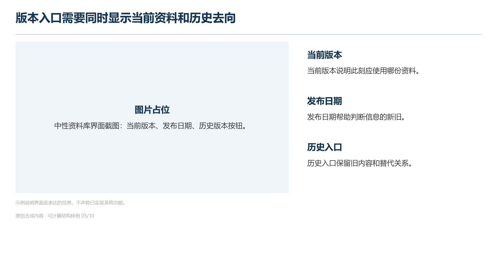
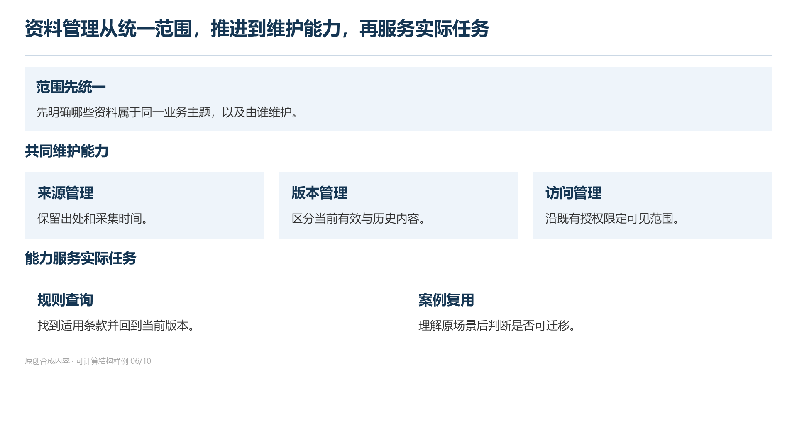
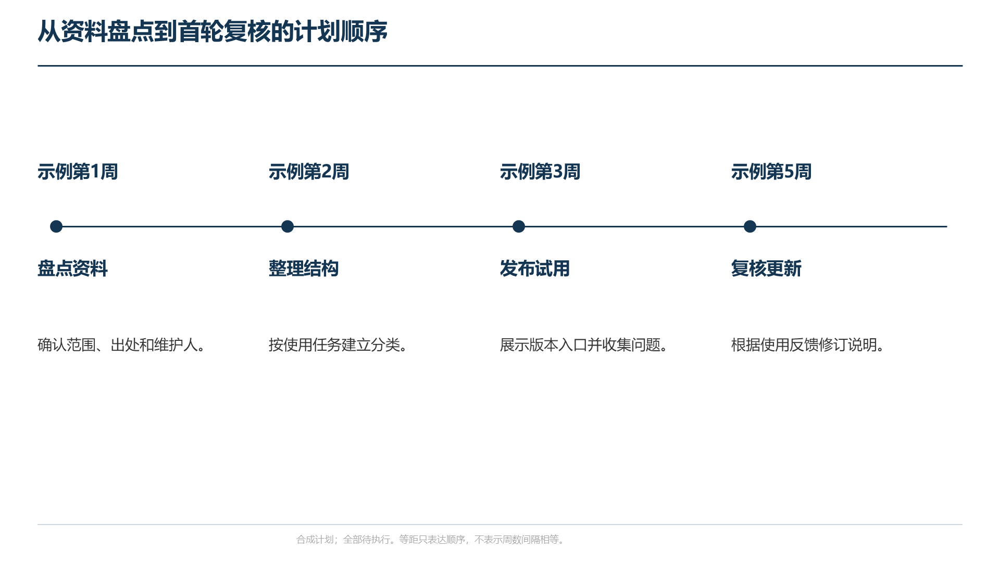
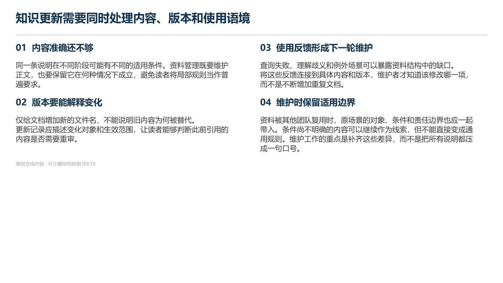
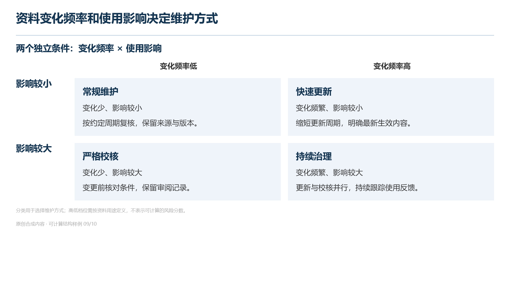
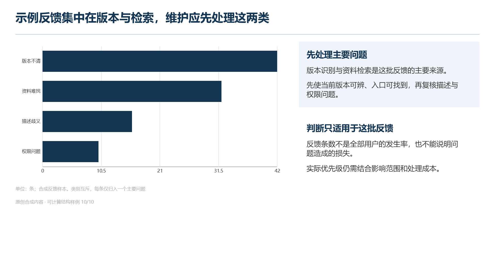

分类解释行

纵向行组；标签/解释为1:4共享显式比例
适用：解释同一分类维度下的3–5类概念
限制：标签列宽由fr约束统一，未实现自动取最长标签作为共享track。
场景与方法 · 作者 · 槽位原创合成内容，全局tokens，独立索引。AI选择结构和绑定内容后由正常computed入口计算。不是全网模板全集，也不自动出现在library query。

纵向行组；标签/解释为1:4共享显式比例
适用：解释同一分类维度下的3–5类概念
限制：标签列宽由fr约束统一，未实现自动取最长标签作为共享track。
场景与方法 · 作者 · 槽位
等宽3列，列内定义/机制/例子/边界
适用：2–3个同层概念或控制机制的对照说明
限制：等高栅格保持同层对齐；复杂条款应语义拆分，不能只缩字号。
场景与方法 · 作者 · 槽位
左顺序关系图+右三层说明，比例1:4
适用：机制、系统边界、材料如何形成输出
限制：沿现有down拓扑改为从上往下；不宣称实现候选bottom-up布局或带边标签的路由。
场景与方法 · 作者 · 槽位
通栏流程+3列证据对应栅格
适用：3步工作流、每一步有独立产物
限制：图位当前是矩形占位；流向改变需改作者树，未实现自动横转竖。
场景与方法 · 作者 · 槽位
主图/解释非对称双栏，比例3:2
适用：界面说明、截图证据、无法原生重绘的真实图
限制：图片内部不变成可编辑对象；当前仅示例占位，没有实图证据完成声明。
场景与方法 · 作者 · 槽位
通栏背景→3能力→2用例，分带嵌套栅格
适用：背景、共同能力与应用任务需要同页解释
限制：分带关系由标题明确；不会从内容自动推断跨带依赖或自动分配叙事。
场景与方法 · 作者 · 槽位
现有timeline/horizontal-4参数模板
适用：最多4个有时间标签的事件或计划里程碑
限制：等距轴仅表顺序，周1/2/3/5不等时间距；不是同比例时间轴，也不是动态任意节点。
场景与方法 · 作者 · 槽位
双栏；左两段铺垫，右解释反馈与应用边界
适用：资讯/原理介绍中需要保留条件的连续论述
限制：这里只按完整段落显式分栏；没有自动文字跨栏续排、孤行控制或keep-with-next算法。
场景与方法 · 作者 · 槽位
2×2语义矩阵+独立行列维度标签
适用：用两个独立条件确定四类管理方式
限制：分类档位由业务定义；面积与位置不编码数量，不是散点坐标或风险评分。
场景与方法 · 作者 · 槽位
证据图/解释栏非对称双栏，比例3:2
适用：同单位分类数据支持重点判断或排序
限制：合成反馈样本，不代表真实业务；解释型任务用图，精确查阅任务改表。
场景与方法 · 作者 · 槽位